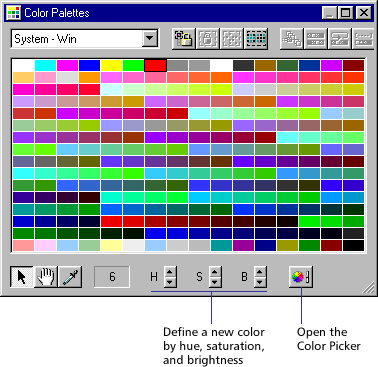

Using Director > Color, Tempo, and Transitions > Controlling color > Changing colors in a color palette
Using Director > Color, Tempo, and Transitions > Controlling color > Changing colors in a color palette |
Changing colors in a color palette
You can define a new color for a color palette by selecting a color you want to change and then using either the controls at the bottom of the Color Palettes window or the system color.

To edit selected colors in the Color Palettes window:
1 |
Choose Window > Color Palettes. |
2 |
Select the palette you want to change from the Palettes pop-up menu. |
3 |
Select a color within the palette to change. |
If you attempt to change one of the default palettes, Director makes a copy of the palette and prompts you to enter a name. |
|
4 |
To change the color using the H, S, and B (hue, saturation, and brightness) controls, click the arrows next to the controls. |
Hue is the color created by mixing primary colors. |
|
Saturation is a measure of how much white is mixed in with the color. A fully saturated color is vivid; a less saturated color is a washed-out pastel or, in the case of black, a shade of gray. |
|
Brightness controls how much black is mixed in with a color. Colors that are very bright have little or no black. As more black is added, the brightness is reduced, and the color gets darker. If brightness is reduced to 0, then no matter what the values are for Hue or Saturation, the color is black. |
|
5 |
To change the color using the system color picker, click the Color Picker button. |
For instruction on using the Windows or Macintosh color picker, see your system documentation. |
|